This is a short note to explain the nature of the B_matrix found in the
Siemens private (CSA) fields of the DICOM headers of a diffusion weighted
acquisition. We trying to explain the relationship between the B_matrix and
the b value and the gradient vector. The acquisition is made with a planned
(requested) b value - say  , and with a requested gradient
direction
, and with a requested gradient
direction ![\mathbf{g}_{req} = [g_x, g_y, g_z]](../_images/math/d160557712681a358a646fe448ccc1f21ceeab7a.png) (supposedly a unit vector).
(supposedly a unit vector).
Note that here we’re using  in the sense of an approximation
to a vector in
in the sense of an approximation
to a vector in  space. Other people use
space. Other people use  for the same
concept, but we’ve chosen to make the exposition clearer.
for the same
concept, but we’ve chosen to make the exposition clearer.
For some purposes we want the q vector 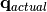 which is
equal to 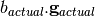. We need to be aware that
 and
and  may be different from the
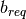 and 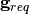! Though the Stejskal and Tanner
formula is available for the classic PGSE sequence, a different sequence
may be used (e.g. TRSE on Siemens Trio), and anyway the ramps up and
down on the gradient field will not be rectangular. The Siemens scanner
software calculates the effective directional diffusion weighting of the
acquisition on the basis of the temporal profile of the applied gradient
vector field. These are in the form of the 6 B_matrix values
may be different from the
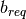 and 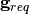! Though the Stejskal and Tanner
formula is available for the classic PGSE sequence, a different sequence
may be used (e.g. TRSE on Siemens Trio), and anyway the ramps up and
down on the gradient field will not be rectangular. The Siemens scanner
software calculates the effective directional diffusion weighting of the
acquisition on the basis of the temporal profile of the applied gradient
vector field. These are in the form of the 6 B_matrix values
![[b_{xx}, b_{xy}, b_{xz}, b_{yy}, b_{yz}, b_{zz}]](../_images/math/c579c87770f42fc5f6912bf7c2dcc22622d0c0e5.png) .
.
In this form they are suitable for use in a least squares estimation of the diffusion tensor via the equations across the set of acquisitions:

The gradient field typically stays in the one gradient direction, in
this case the relationship between and the  is as
follows. If we fill out the symmetric B-matrix as:
is as
follows. If we fill out the symmetric B-matrix as:

then  is equal to the rank 1 tensor
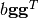. One of the ways to recover
is equal to the rank 1 tensor
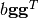. One of the ways to recover  and
and  ,
and hence , from
is to do a singular value decomposition of
,
and hence , from
is to do a singular value decomposition of  , where only one of the
, where only one of the  ,
say
,
say  , is effectively non-zero. Then 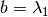, 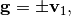 and 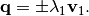 The choice of sign is arbitrary
(essentially we have a choice between two possible square roots of the
rank 1 tensor ). Once we have we can
calculate 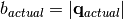 and 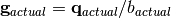. Various sofware packages
(e.g. FSL’s DFT-DTIFIT) expect to get 3 × N and 1 × N arrays of
and values as their inputs.
, is effectively non-zero. Then 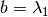, 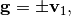 and 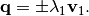 The choice of sign is arbitrary
(essentially we have a choice between two possible square roots of the
rank 1 tensor ). Once we have we can
calculate 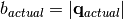 and 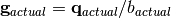. Various sofware packages
(e.g. FSL’s DFT-DTIFIT) expect to get 3 × N and 1 × N arrays of
and values as their inputs.